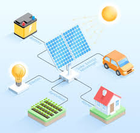

Blog de la Energia Solar
¿Que es la energia Solar?
Energia Solar
Retos y limitaciones
El futuro de la energia Solar
Beneficios de la energía solar
1) Es una fuente renovable e inagotable: mientras exista el sol, habrá energía.
2) Es limpia y ecológica: no genera contaminación directa ni gases tóxicos.
3) Reduce los costos de electricidad: tras la inversión inicial, los usuarios ahorran mucho dinero.
4) Genera empleo: la instalación, mantenimiento y producción de sistemas solares crean miles de puestos de trabajo en el mundo.
5) Versatilidad de uso: se adapta a viviendas, industrias, agricultura y hasta en transporte.
6) Larga vida útil: los paneles pueden durar más de 25 años con poco mantenimiento.
7) Promueve el desarrollo rural: al llevar electricidad a zonas aisladas, mejora la calidad de vida y fomenta la educación y la salud.

Katherine Natalia Serrano Garcia
Cuarto Bachillerato B
Clave:25